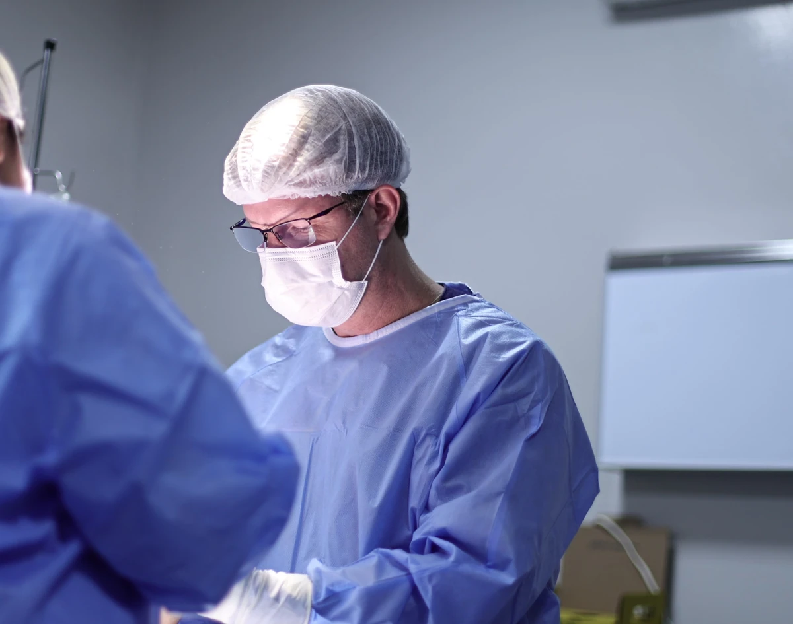

Mão e punho
Dr. Cássio Cocate

"Em muitos casos, só o exame clínico já dá uma boa ideia do diagnóstico."
Sinais para procurar avaliação
- Dedo que trava e precisa da outra mão para endireitar.
- Formigamento ou perda de força nas mãos.
- Dor no punho que continua dias depois de uma queda.
Como ele trata
A avaliação define se basta acompanhar, imobilizar ou tratar. A cirurgia fica para os casos que limitam o movimento.
Toda bolinha no punho precisa ser operada?
Não. A causa mais comum é o cisto sinovial, geralmente benigno. Quando não incomoda, muitas vezes só se acompanha.